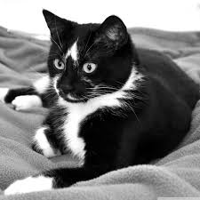
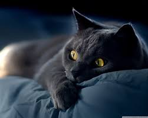
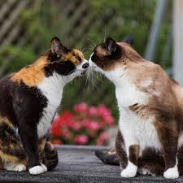
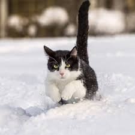

<
The Darlings of the Interwebs: CATS
The Darlings of the Interwebs: CATS

Cats are definitely the Darlings of the internet. From Catzilla to GrumpyCat, to videos of kittens on Youtube, cats have never been more popular online.

Cats are really quite misunderstood creatures. People tend to believe they are solitary and don't need companionship like dogs. Nothing could be less true.

If you look at old pictures of the Coliseum, where cats once roamed freely, they were never alone.
These cats could wander wherever they wished, however they were gathered in a giant colony, not off by themselves. They are actually very dependent on social relationships.

Also, male and female cats interact very differently. The males are quite friendly to strangers of all kinds, except for other adult male cats who threaten their territory. The females are more easily frightened, primarily concerned with protecting kittens.